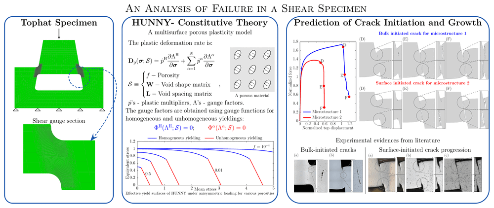

An Analysis of Failure in a Shear Specimen
R. Vigneshwaran and A.A. Benzerga. International Journal of Mechanical Sciences 326 (2026) 111913.
Predicting fracture in shear from first principles is notoriously hard. We simulate a top-hat shear specimen to failure with the HUNNY porous plasticity theory: inside the shear band, voids elongate and rotate until crack-like voids coalesce. The initial void distribution decides how the specimen breaks—cracks either start inside and run outward or start at the surface and run inward, the same two modes seen in experiments.